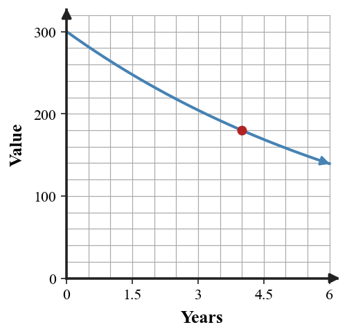
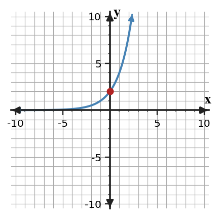
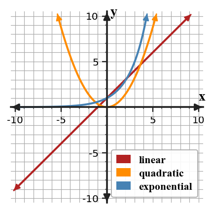

A source-grounded study guide for vocabulary, rules and relationships, section targets, representations, common misconceptions, and reasoning across DOK levels.
Unit at a Glance
What ties Unit 7 together?
Students will analyze, represent, model, and interpret exponential relationships using patterns, tables, graphs, equations, and real-world situations.
2Write modelsUse initial value and growth/decay factor.
→
3Analyze graphsInterpret intercepts, asymptotes, and behavior.
→
4Compare & fitDistinguish families and judge exponential models.
Unit Vocabulary & Representations
Words and representations worth knowing cold
These source-supported terms and representation types organize the work across the unit.
7.1 Recognizing Growth and Decay
Tables with constant ratiosGraphs showing growth or decay curvesVerbal situations involving repeated percent changeSequences of values or patternsEquations in the form $y=ab^x$
7.2 Writing Exponential Equations
Initial values and growth factorsTables of input-output valuesGraphs with visible intercepts and multiplicative changeContext statements with percent growth or decayEquations such as $f(x)=a(1+r)^x$ and $f(x)=a(1-r)^x$
7.3 Graphing and Analyzing Exponential Functions
Coordinate graphs of exponential functionsTables generated from exponential equationsKey points such as the y-interceptHorizontal asymptote behaviorDomain and range statements
7.4 Comparing Function Families
Tables showing first differences, second differences, and ratiosLinear, quadratic, and exponential graphsEquations for multiple function familiesContext descriptions of change over timeFeature comparisons such as intercepts, growth patterns, and turning points
7.5 Exponential Modeling with Data
Real-world data tablesScatter plots with exponential trendsExponential equations built from dataPredictions and residual reasoningContextual interpretations of parameters and outputs
Rules, Forms & Relationships
The structures Unit 7 expects you to use
Use these relationships only in the situations where their structure applies. The section review below shows how they connect to representations and contexts.
Exponential form
$y=ab^x$
$a$ is the initial value and $b$ is the repeated growth/decay factor.
Growth factor
$b=1+r$
For percent growth, convert the percent rate to a decimal and add 1.
Decay factor
$b=1-r$
For percent decay, convert the percent rate to a decimal and subtract from 1.
Constant ratio
$\frac{y_{n+1}}{y_n}=b$
Equal input steps in an exponential pattern produce a constant output ratio.
Shifted exponential
$f(x)=ab^x+k$
The vertical shift $k$ moves the horizontal asymptote to $y=k$.
Students will identify exponential relationships from patterns, tables, graphs, and situations.
I can…
I can construct evidence from patterns, tables, graphs, and situations to support an exponential growth or decay relationship.
I can apply repeated multiplication and constant ratios to exponential patterns.
I can determine whether a relationship is exponential by checking how values change across representations.
Summary
You can recognize exponential growth or decay by looking for repeated multiplication across equal steps.
In an equation like $y=ab^x$, $a$ is the starting value and $b$ is the multiplier; $b\gt1$ means growth and $0\lt b\lt1$ means decay.
A common error is to call any rising graph linear or any falling graph decay without checking ratios.
Strong understanding means you can point to table values, equations, or context words and explain the multiplier that controls the change.
Exponential growth and decay comparison.
Key representations:Tables with constant ratiosGraphs showing growth or decay curvesVerbal situations involving repeated percent changeSequences of values or patternsEquations in the form $y=ab^x$
DOK 1
Recognize and interpret tables with constant ratios and the basic features used in this section.
DOK 2
apply repeated multiplication and constant ratios to exponential patterns
DOK 3
determine whether a relationship is exponential by checking how values change across representations
DOK 4
Model population growth from a table of values
Common traps to avoid
Using direction only
Why it is tempting: rising and falling are easy to see. What to check instead: check differences and ratios.
Confusing percent with multiplier
Why it is tempting: 20% looks like 20. What to check instead: use 1.20 for a 20% increase and 0.80 for a 20% decrease.
Checking only one pair
Why it is tempting: one ratio may accidentally fit. What to check instead: check every consecutive ratio.
Calling repeated subtraction decay
Why it is tempting: both can decrease. What to check instead: decay uses multiplication by a factor between 0 and 1.
Students will write exponential equations from tables, graphs, and situations.
I can…
I can build exponential equations using an initial value and a growth or decay factor.
I can use exponential equations to predict values from tables, graphs, and situations.
I can formulate exponential equations that represent repeated percent increase or decrease.
Summary
You can write an exponential equation when you know the starting value and the repeated multiplier.
The form $y=ab^x$ shows both parts: $a$ is the value at $x=0$, and $b$ is the growth or decay factor.
A common error is to put the percent itself into the equation instead of converting it to a multiplier.
Strong understanding means you can build a model from a table, graph, or context and explain what the equation predicts.

Percent change connected to an exponential factor.
Key representations:Initial values and growth factorsTables of input-output valuesGraphs with visible intercepts and multiplicative changeContext statements with percent growth or decayEquations such as $f(x)=a(1+r)^x$ and $f(x)=a(1-r)^x$
DOK 1
Recognize and interpret initial values and growth factors and the basic features used in this section.
DOK 2
use exponential equations to predict values from tables, graphs, and situations
DOK 3
formulate exponential equations that represent repeated percent increase or decrease
DOK 4
Create savings or investment models with repeated percent growth
Common traps to avoid
Using the percent as $b$
Why it is tempting: 5% looks like 5 or 0.05. What to check instead: write 1.05 for increase and 0.95 for decrease.
Missing the initial value
Why it is tempting: the first visible row may not be $x=0$. What to check instead: check which input gives the starting value.
Adding instead of multiplying
Why it is tempting: tables may look like they just go up. What to check instead: verify ratios between outputs.
Ignoring multi-step gaps
Why it is tempting: two visible rows may be several steps apart. What to check instead: use roots to find the one-step multiplier.
Students will graph exponential functions and analyze key features.
I can…
I can design graphs of exponential functions using key points, growth or decay factors, and asymptote behavior.
I can apply key features of exponential graphs to interpret domain, range, intercepts, and end behavior.
I can assess whether a graph is reasonable for an exponential equation or situation.
Summary
You can analyze an exponential graph by connecting its equation, table values, y-intercept, and asymptote.
The y-intercept comes from $x=0$, and a vertical shift changes the horizontal asymptote from $y=0$ to $y=k$.
A common error is to forget that a + or - outside the exponential changes graph features, not the multiplier.
Strong understanding means you can revise a graph or table when one representation does not match the equation.

Key points on an exponential graph.
Key representations:Coordinate graphs of exponential functionsTables generated from exponential equationsKey points such as the y-interceptHorizontal asymptote behaviorDomain and range statements
DOK 1
Recognize and interpret coordinate graphs of exponential functions and the basic features used in this section.
DOK 2
apply key features of exponential graphs to interpret domain, range, intercepts, and end behavior
DOK 3
assess whether a graph is reasonable for an exponential equation or situation
DOK 4
Graph growth and decay models from equations
Common traps to avoid
Forgetting the shift
Why it is tempting: the parent graph is familiar. What to check instead: check for an added $k$ outside the exponential.
Mislabeling the y-intercept
Why it is tempting: students may use $a$ only. What to check instead: evaluate the full expression at $x=0$.
Treating the asymptote as a point
Why it is tempting: the graph gets close to it. What to check instead: describe it as long-run behavior.
Plotting too few points
Why it is tempting: a curve cannot be seen from one point. What to check instead: use at least five points when sketching.
Students will compare linear, quadratic, and exponential functions using multiple representations.
I can…
I can formulate comparisons among linear, quadratic, and exponential functions using rates, differences, ratios, and graph features.
I can use tables, graphs, equations, and situations to distinguish additive, quadratic, and multiplicative patterns.
I can critique claims about function families using evidence from multiple representations.
Summary
You can compare function families by matching the evidence to the type of change.
Linear patterns have constant first differences, quadratic patterns have constant second differences, and exponential patterns have constant ratios.
A common error is to use the direction or general shape of a graph without checking numerical evidence.
Strong understanding means you can justify a model choice across tables, graphs, equations, and contexts and explain a limitation of the choice.

Linear, quadratic, and exponential family shapes.
Key representations:Tables showing first differences, second differences, and ratiosLinear, quadratic, and exponential graphsEquations for multiple function familiesContext descriptions of change over timeFeature comparisons such as intercepts, growth patterns, and turning points
DOK 1
Recognize and interpret tables showing first differences, second differences, and ratios and the basic features used in this section.
DOK 2
use tables, graphs, equations, and situations to distinguish additive, quadratic, and multiplicative patterns
DOK 3
critique claims about function families using evidence from multiple representations
DOK 4
Choose a function family for a data pattern using evidence
Common traps to avoid
Using shape names only
Why it is tempting: graphs are quick to label. What to check instead: support claims with differences, ratios, or features.
Mixing up second differences and ratios
Why it is tempting: both involve more than one step. What to check instead: write the actual calculations.
Assuming exponential is always bigger
Why it is tempting: early values can be close. What to check instead: compare over the requested interval.
Ignoring context
Why it is tempting: a pattern may fit numbers but not the situation. What to check instead: state what kind of change the context implies.
Students will create and analyze exponential models using real-world data.
I can…
I can construct exponential models from real-world data using an initial value and a growth or decay factor.
I can extend exponential models to make predictions and interpret results in context.
I can assess model fit and limitations when exponential data do not follow a perfect pattern.
Summary
You can create an exponential model from data by finding the starting value and estimating a repeated multiplier.
A model such as $y=ab^x$ can be used to make predictions, but the prediction should be interpreted in context.
A common error is to force exact exponential behavior onto data that only approximately follows a trend.
Strong understanding means you can explain the model, make a near-term prediction, and name a limitation of the model fit.
Data with an exponential model.
Key representations:Real-world data tablesScatter plots with exponential trendsExponential equations built from dataPredictions and residual reasoningContextual interpretations of parameters and outputs
DOK 1
Recognize and interpret real-world data tables and the basic features used in this section.
DOK 2
extend exponential models to make predictions and interpret results in context
DOK 3
assess model fit and limitations when exponential data do not follow a perfect pattern
DOK 4
Model viral sharing, population change, or compound growth
Common traps to avoid
Assuming perfect ratios
Why it is tempting: classroom tables are often clean. What to check instead: expect real data to be approximate.
Predicting too far
Why it is tempting: the formula works for any input. What to check instead: be cautious outside the data range.
Ignoring units
Why it is tempting: numbers alone feel sufficient. What to check instead: state what input and output mean.
Choosing a model from one increase
Why it is tempting: the first step can be misleading. What to check instead: check several differences or ratios.
Unit Mastery by DOK
A second way to organize the review
Sections tell you which topic you are reviewing. DOK tells you how deeply you need to use it.
DOK 1 · Recognize
Control notation and basic features
Recognize the key features and notation used in Recognizing Growth and Decay.
Recognize the key features and notation used in Writing Exponential Equations.
Recognize the key features and notation used in Graphing and Analyzing Exponential Functions.
Recognize the key features and notation used in Comparing Function Families.
Recognize the key features and notation used in Exponential Modeling with Data.
DOK 2 · Apply & Represent
Use procedures and representations
apply repeated multiplication and constant ratios to exponential patterns.
use exponential equations to predict values from tables, graphs, and situations.
apply key features of exponential graphs to interpret domain, range, intercepts, and end behavior.
use tables, graphs, equations, and situations to distinguish additive, quadratic, and multiplicative patterns.
extend exponential models to make predictions and interpret results in context.
DOK 3 · Reason & Critique
Use evidence to defend or revise
determine whether a relationship is exponential by checking how values change across representations.
formulate exponential equations that represent repeated percent increase or decrease.
assess whether a graph is reasonable for an exponential equation or situation.
critique claims about function families using evidence from multiple representations.
assess model fit and limitations when exponential data do not follow a perfect pattern.
DOK 4 · Design & Synthesize
Build and connect models
Model population growth from a table of values
Create savings or investment models with repeated percent growth
Graph growth and decay models from equations
Choose a function family for a data pattern using evidence
Model viral sharing, population change, or compound growth
Before the Summative
Can you do these without notes?
Vocabulary & Concepts
Recognizing Growth and Decay
Writing Exponential Equations
Graphing and Analyzing Exponential Functions
Comparing Function Families
Exponential Modeling with Data
Representations & Procedures
apply repeated multiplication and constant ratios to exponential patterns.
use exponential equations to predict values from tables, graphs, and situations.
apply key features of exponential graphs to interpret domain, range, intercepts, and end behavior.
use tables, graphs, equations, and situations to distinguish additive, quadratic, and multiplicative patterns.
extend exponential models to make predictions and interpret results in context.
Reasoning & Modeling
determine whether a relationship is exponential by checking how values change across representations.
formulate exponential equations that represent repeated percent increase or decrease.
assess whether a graph is reasonable for an exponential equation or situation.
critique claims about function families using evidence from multiple representations.
assess model fit and limitations when exponential data do not follow a perfect pattern.
Strong Algebra work connects procedures to structure, checks representations against one another, and explains why the result fits the mathematical situation.